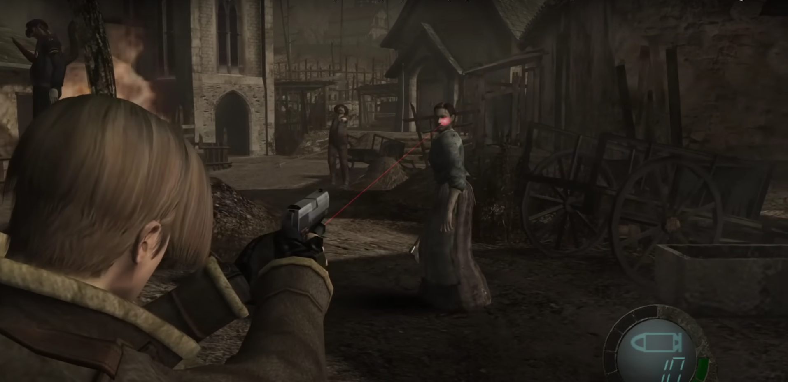
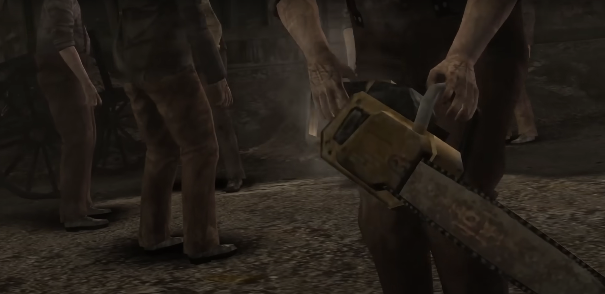

←Episodio 1: El pueblo (día)→
Ahora han pasado 6 años desde los eventos en Raccoon City y tú (Leon) tienes un nuevo trabajo protegiendo al presidente y su familia. Pero antes de comenzar realmente, la hija del presidente, Ashley, fue secuestrada. Por lo tanto, te están llevando a un pueblo remoto en España para investigar informes de que Ashley fue vista allí. Se te asignan dos oficiales de policía locales para ayudarte, pero cuando llegan, te envían solo. Cuando sales del automóvil, escuchas tu comunicador y Hunnigan se presenta. Ella será tu contacto mientras estés en el campo.

Avanza hacia adelante, alejándote del auto. Notarás cuervos posados en el suelo o en las ramas de los árboles; si te acercas demasiado, volarán lejos de ti. Puedes recolectar dinero u otros objetos disparándoles antes de que se muevan. También puedes dispararles después de que despeguen, pero se requerirá un poco de puntería experta para alcanzarlos en vuelo.Continúa por el camino, a la derecha hay un viejo letrero con la palabra "Pueblo". A medida que te acerques a una casa, se reproducirá una escena cortada donde alguien te está observando a través de la ventana.Explora primero afuera de la casa. A la derecha hay un camión estacionado en el camino que bloquea tu entrada al pueblo. Dirígete al lado izquierdo de la casa y encontrarás una caja de madera. Estas cajas, y ocasionalmente barriles, aparecen a lo largo del juego, vienen en varios tamaños y contienen objetos o dinero, así que estate atento a ellas. Saca tu cuchillo y ataca la caja para destruirla; también puedes dispararle, pero es un desperdicio de balas. Recolecta el contenido y regresa al frente de la casa.
Ahora es hora de entrar, así que dirígete hacia la casa. Tan pronto como entres, comenzarás a escuchar a alguien toser. Dirígete hacia el ruido y comenzará otra escena donde le muestras a un hombre una foto de Ashley. Él te dice que te vayas y luego te ataca con un hacha. Tan pronto como termine la escena, equipa tu arma y comienza a disparar. Recuerda que apuntar a áreas específicas del cuerpo tendrá diferentes efectos. Haz que caiga al suelo disparándole a las piernas, luego puedes patearlo. Atúrdelo por un momento disparándole a la cara y también puedes patearlo. Dispara en diferentes áreas para diferentes resultados. El cuchillo hace un buen daño al principio del juego, así que también puedes correr pasando junto a él y darte la vuelta cuando él falle su ataque, dejándolo expuesto durante unos segundos. También puedes acercarte y provocar un ataque, retroceder para esquivar y luego apuñalarlo. Puede que no parezca deportivo, pero también usa el cuchillo si está tendido en el suelo pero aún vivo; de lo contrario, se levantará y atacará y no esperaría a que te levantes. Cuando caiga, se reproducirá otra escena. Escuchas que el camión se enciende y miras por la ventana para verlo dirigiéndose por el camino. Hay un gran alboroto y las cosas no suenan muy bien para los oficiales de policía que no quisieron acompañarte. Te comunicas con Hunnigan y reportas que al menos algunos de los aldeanos son hostiles. Ella te aconseja que sigas adelante y encuentres a Ashley.
Si tu amigo en el suelo llegara a soltar algún objeto, asegúrate de recogerlo. Podrías intentar salir por la puerta principal, pero más aldeanos están presionándola. Así que tienes que encontrar otro camino. Adelante y explora la casa, encontrarás unas escaleras detrás de la chimenea; sube las escaleras. Revisa cerca de la parte superior de las escaleras para encontrar una recarga de munición. Hay una ventana aquí y si la rompes puedes disparar a un aldeano abajo si lo ves parado en frente en lugar de intentar pasar por la puerta. Regresa abajo y ve cerca de la ventana; notarás un comando que aparece en la pantalla que te permite saltar. También puedes saltar por la ventana de arriba pero entonces aterrizas en medio de todos los aldeanos.
Una vez que estés fuera de la casa, los aldeanos abrirán la puerta principal y te seguirán por la ventana de abajo si es por donde fuiste. En cualquier caso, hay 3 personas detrás de ti y no están muy contentas con el cambio de imagen que acabas de darle a su amigo. La ventana es un buen punto de estrangulamiento donde puedes disparar algunas buenas balas, pero vigila por un aldeano que podría no pasar por la casa. Si comienzan a rodearte, muévete a un área segura donde puedas poner tu espalda contra la pared y dispararles. Se mueven lentamente, así que también puedes correr para pasar junto a ellos y llegar a una mejor posición. Recuerda vigilar tus municiones y detenerte para recargar si comienzan a escasear. Cuando los tres aldeanos sean derrotados, la música de terror se detendrá y podrás recoger cualquier objeto que hayan soltado. Si vuelves a la casa y exploras, encontrarás evidencia de que algo muy extraño y siniestro está sucediendo con la gente aquí. Si regresas al lugar donde comenzaste, te darás cuenta de que no puedes retroceder. El puente está caído, y si miras por el precipicio puedes ver el camión y el auto de policía en el fondo del barranco. La única opción que tienes ahora es avanzar por el camino.
Sigue el camino y encontrarás una cabaña a la derecha. Aquí encontrarás cajas de madera y una recarga de munición, así que asegúrate de recogerlas. También encontrarás una máquina de escribir aquí. Mantente atento a estas máquinas de escribir, porque así es como guardarás tu partida. A diferencia de los juegos anteriores de Resident Evil, no necesitas "cintas de tinta" para guardar, así que siéntete libre de usarla tanto como quieras. Sal de la cabaña y continúa por el camino; aquí hay más cuervos posados. Te encontrarás con un perro blanco que se metió en problemas. No lo ataques, de hecho, si lo ayudas serás recompensado más adelante. Considerando que el perro quedó atrapado en ella, debes saber que hay otras trampas para osos en esta área. Hay una hierba roja a la derecha entre las emboscadas un poco más adelante. Hay un marcador rojo aquí que generalmente significa que hay un peligro oculto cerca. Puedes desactivar las trampas disparándoles o atacando con tu cuchillo. Hay una a la izquierda de un árbol grande al lado del camino en la que puedes practicar.
Más adelante hay otro letrero y a la derecha hay un área parcialmente cercada. Revisa cerca del lado derecho para encontrar una Hierba Roja entre los juncos. Regresa al camino principal y avanza un poco. Mantente atento a las luces rojas intermitentes en los árboles. Estas luces rojas indican que se ha colocado una mina de trípode, y si la cruzas, no te gustarán los resultados. Hay dos minas de trípode aquí y una trampa para osos entre ellas, pero hay una ruta segura a la izquierda. Puedes disparar a los explosivos o al trípode para activar una mina desde la distancia. Justo después de esto, te encontrarás con otro residente amistoso del pueblo. Derrota como a los otros aldeanos, pero ganarás puntos de estilo (que en realidad no existen) si logras que caiga en uno de los trípodes. Más adelante en el camino, encontrarás otra cabaña con una hierba verde y cajas de madera. Al salir de esa cabaña, revisa la pared en busca de más pruebas de que el pueblo se ha vuelto violentamente loco. En este momento, más aldeanos te notarán y comenzarán a bajar por el camino. Continúa cruzando el puente donde varios aldeanos te verán, pero huirán, probablemente para poder emboscarte más tarde. Continuando más allá del puente, encontrarás una última cabaña y un aldeano te estará esperando dentro. Aquí también encontrarás una recarga de munición y más cajas. Justo adelante hay una gran puerta hacia la siguiente área, pero es buena idea volver a la máquina de escribir y guardar tu partida antes de seguir adelante.
Al otro lado de la puerta hay una escena cortada donde Hunnigan te proporciona una guía de juego básica. (Este es un punto de Continuar.) Léela si quieres, luego continúa por el camino. Continúa por el camino; aparecerá un comando para 'Observar' cuando llegues a cierto árbol. No es necesario mirar, pero puedes explorar el área y observar a los aldeanos realizar sus actividades diarias. Hay una hoguera en medio de la calle y puedes ver el destino de uno de los policías que se negó a acompañarte. Ahora viene una de las partes más intensas del juego, una batalla difícil que pondrá a prueba los límites de las habilidades de combate que has aprendido hasta ahora. Se necesitará algo de práctica y un poco de ensayo y error para encontrar las mejores tácticas que se adapten a tu estilo de juego. A menudo, el mejor enfoque depende de lo que tengas en tu inventario, así que qué objetos aleatorios has encontrado hasta este punto entra en juego. Hay demasiadas variables para cubrir todas las posibles contingencias aquí, pero hemos intentado incluir las más probables.
Hay varios aspectos que debes tener en cuenta. Primero, sin importar lo que hagas, eventualmente algún aldeano sonará la alarma y enfrentarás una dura batalla para la cual estás lamentablemente mal equipado. Segundo, una vez que se haya sonado la alarma, habrá guardias apostados en las salidas y si te ven, estarás en graves problemas. Incluso si logras llegar a una puerta, estará cerrada con llave. Tercero, necesitas desencadenar la siguiente escena cortada y sobrevivir a la nueva batalla que sigue. Afortunadamente, esto terminará después de cierto período de tiempo o cuando hayas derrotado a suficientes aldeanos, lo que ocurra primero. Un enfoque es simplemente caminar hacia el pueblo. Los aldeanos seguirán ignorándote hasta que alguien te vea y comiencen a atacarte. Esto es arriesgado ya que estarás en desventaja desde el principio. Sigue moviéndote para que los aldeanos no se agrupen y usa una granada si te acorralan. Otro enfoque es tomar los caminos laterales a la izquierda y a la derecha para recoger objetos adicionales antes de que comience la batalla. Esto requiere sigilo para que los aldeanos no te vean; cronometra tus movimientos para que los aldeanos estén de espaldas a ti cuando estés al descubierto. Ve hacia la derecha para encontrar una cabaña con cajas, y hacia la izquierda para encontrar una hierba en algunos troncos y una casa donde puedes entrar por la ventana y obtener cosas dentro. Una vez que se haya levantado la alarma, puedes seguir con el enfoque sigiloso permaneciendo en los caminos laterales y enfrentando a los aldeanos uno por uno cuando puedas.
De cualquier manera, no tienes mucha munición ni objetos de curación y los aldeanos casi nunca parecen dejar de llegar. Lo primero que debes recordar es que los aldeanos siempre vendrán por ti, así que o mantente en movimiento o prepárate para enfrentarte a una multitud de ellos. Hay suministros en la mayoría de los edificios y más dispersos por el área. Meterse en un edificio es una buena manera de proporcionarte algo de cobertura temporal y reducir el paso de tus atacantes, ya que solo pueden entrar por una puerta o ventana a la vez. Los aldeanos no se mueven muy rápido, así que a menudo puedes salir de su alcance corriendo alrededor de varios obstáculos. Si rodeas un edificio a través de los caminos laterales, es posible que puedas acercarte a un aldeano solitario y eliminarlo. Si estás en campo abierto, es posible que un aldeano en un tejado te lance un hacha. Sigue moviéndote para esquivarlas y dispara a los aldeanos del tejado cuando puedas. Cuando hayas matado a cierto número de aldeanos, habrá una breve escena cortada donde llegan refuerzos. Esto es en realidad una buena noticia, ya que significa que la batalla está casi terminada, solo tienes que sobrevivir lo suficiente o obtener suficientes bajas. Usa las mismas tácticas para esta ronda; no es necesario derrotar a todos los aldeanos, lo cual probablemente sea imposible de todos modos, así que tómate tu tiempo.
Un edificio al que debes prestar especial atención es la casa de dos pisos en el lado izquierdo de la calle; tiene un contenedor rojo en frente y una pequeña valla rodeando la entrada. En el interior, en el piso superior, puedes encontrar la Escopeta, que será muy útil cuando estés luchando contra múltiples enemigos al mismo tiempo. El problema es que entrar en el edificio desencadena una escena que muestra la aparición de uno de los enemigos más mortales del juego, el Dr. Salvador, un maniático que empuña una motosierra y es extremadamente difícil de matar, y te decapitará de un solo golpe si se acerca lo suficiente. Sin embargo, si logras matarlo, ¡obtendrás unas impresionantes 10000 PTAS que serán muy útiles cuando te encuentres con el Mercader! Ten en cuenta que puedes desencadenar la escena antes o después de la escena donde llegan los refuerzos. Si desencadenas la escena, no entres en pánico, ya que empeorará las cosas y te hará menos reactivo cuando aparezca el Dr. Salvador.
Corre hacia arriba por las escaleras y recoge la Escopeta (colgada en la pared en la parte superior de las escaleras), una granada (en un armario de vidrio a la izquierda de esto) y recarga de cartuchos de escopeta (sobre la cama). Mientras estés cerca, puedes tirar la escalera por la ventana para ralentizar un poco a los aldeanos. Salta por la ventana del piso superior al tejado del edificio de al lado. Si ya hay aldeanos esperando en la ventana, atúrdelos primero. Luego, gira a la derecha para alcanzar un saliente que rodea el piso superior; sigue esto en la esquina y haz tu parada allí. Los aldeanos estarán congestionados en el saliente, así que puedes luchar contra ellos relativamente fácil. Elige tu arma según la situación, ya que es posible que necesites la munición más poderosa más adelante. Así que quédate con tu pistola si solo hay uno o dos aldeanos acercándose, pero cambia a la escopeta o la granada si hay más o si aparece el Dr. Salvador. Si las cosas comienzan a ponerse mal aquí, siempre puedes saltar del tejado para escapar. El Dr. Salvador parece ser invulnerable en el suelo, así que siempre espera hasta que se levante antes de dispararle.
Eventualmente, suponiendo que aún estés vivo, una escena abrupta pondrá fin a todo el caos. Una campana suena y los aldeanos dicen algo sobre tener que ir a rezar, luego todos desaparecen en un pequeño edificio en el lado este. (Aparentemente, llegar a la iglesia a tiempo es más importante que una pequeña cosa como asesinar a un forastero). Hunnigan se comunica contigo y le informas sobre encontrar al policía muerto. Ella te dice que sigas el camino cerca de la torre; este es el camino noreste en el mapa. Después de la escena, busca en el pueblo y todos los objetos en el área que te hayas perdido antes. Ya no hay enemigos alrededor, así que tómate tu tiempo y disfruta del paisaje.
La Orden de Alerta es de Mendez, el jefe del pueblo. Menciona algo sobre un prisionero que está siendo retenido en una granja, así que aparentemente estás en el camino correcto. Una vez que tengas todos los objetos, sigue el camino hacia el noreste hasta una puerta grande y atraviesa. La puerta sur y la puerta del edificio donde fueron todos los aldeanos están cerradas con llave.
Tan pronto como llegues al área abierta, habrá una choza directamente a la izquierda; encontrarás un barril y una máquina de escribir dentro. Definitivamente guarda después de la batalla anterior. Esta área está casi desierta, pero hay muchas cosas buenas que encontrar, algunas de las cuales requieren habilidad e ingenio. Hay gallinas aquí, así que mantén un ojo en los huevos que parecen aparecer al azar. Justo al lado del edificio hay un pozo lleno de un líquido repugnante. Colgando sobre ese líquido hay un collar que solo puedes obtener disparándolo, pero si lo haces ahora caerá en el líquido y perderá la mayor parte de su valor. En su lugar, dispara al soporte que sostiene la tapa para que se cierre. Ahora puedes disparar al objeto y recoger el Colgante de Perlas. Ten en cuenta que disparar puede alertar a los pocos aldeanos en el área, así que mantente atento a un ataque. Asegúrate de no abrir el pozo una vez que la tapa esté abajo, ya que será imposible cerrarlo de nuevo. Al noroeste hay un campo con vacas y un establo al lado; hay un aldeano en cada uno. Revisa dentro del establo para encontrar un barril, luego revisa detrás de la choza al norte para encontrar otro barril.
Así que al sur hay un área cercada con gallinas. Hay un árbol aquí con un papel azul colgando de él. Es "Sobre las Medallas Azules" y contiene información sobre un objetivo adicional que deberías completar. Consulta la página de misiones secundarias para más detalles. Junto al área cercada hay un granero; cuidado con un aldeano trabajando detrás de él, otro trabajando en el piso superior dentro y otro más en el corral al este. Disparar a uno alertará a los otros dos cuando escuchen el alboroto, así que prepárate para luchar contra los tres. Encontrarás una caja y tres barriles en el primer piso de este edificio. Revisa los armarios para encontrar una Espinela y 1000 PTAS, luego revisa otro armario arriba para encontrar munición para la pistola. Salta por la ventana para encontrarte en un balcón fuera del edificio. Si caminas hacia adelante y saltas al final del pasamanos, aterrizarás en un pequeño corral. Destruye la caja aquí para recoger el Cáliz de Cerveza. Entra en el cobertizo y empuja el estante para salir. Regresa al balcón y salta al lado de la escalera al final para entrar en otra área cercada. Hay una caja en una mesa aquí y debajo del borde hay una choza con un barril y otra caja; esta caja contendrá una Espinela. Vuelve, sube por la escalera y salta desde el medio del balcón para volver al área principal. Continúa hacia el este para llegar a una puerta a un nuevo área. Este es un punto de Continuar.
Sigue el camino un corto trayecto para ver otro letrero rojo que advierte de peligro. Continúa para ver una breve escena seguida de una pequeña prueba de destreza, ya que los aldeanos ruedan una gigantesca roca tras de ti y debes escapar al estilo de Indiana Jones. Sigue presionando el botón que se muestra en la pantalla repetidamente para superar a la roca. (Qué botón presionar depende de la versión del juego.) Después de correr un poco, aparecerá otra serie de combinaciones de botones en la pantalla; asegúrate de presionar las correctas o no te gustará el resultado. (En este caso, el juego elige aleatoriamente un conjunto de combinaciones que dependen de la versión del juego.) Esta es la primera de varias pruebas como esta y puede que necesites algunos intentos para acostumbrarte. Una vez que hayas esquivado la roca, se romperá en pedazos, permitiéndote continuar a través del oscuro túnel. Dispara a los objetos brillantes en el techo para obtener espinelas. Los murciélagos saldrán cuando los disturbes, pero simplemente ignóralos. El letrero rojo y el cambio de música cuando llegas al otro extremo deberían advertirte que hay más peligro, y efectivamente, un aldeano estará esperando con una provisión de palos de dinamita listos para arrojártelos. El aldeano puede decidir avanzar hacia ti, retroceder hacia la casa detrás de él, o simplemente quedarse donde está.
Mantén un ojo en cuando encienda la mecha y asegúrate de estar fuera de su alcance antes de que la bomba caiga. Una forma rápida de deshacerte del aldeano, si puedes lograrlo, es simplemente dispararle en el brazo que sostiene la dinamita; explotará y se llevará al aldeano consigo. Afortunadamente, tiende a arrojarla incluso si estás fuera de su alcance, así que generalmente puedes dispararle a distancia con relativa seguridad. Ve a la izquierda hacia una pequeña choza, pero ten cuidado con otro aldeano con dinamita que te espera al otro lado. Hay una mina con trampa y una trampa para osos dentro de la choza, aunque es probable que la dinamita haga estallar la mina mucho antes de que llegues a ella. Dispara al aldeano a través de las puertas de la choza, luego revisa el estante dentro de la choza para encontrar cajas, probablemente ya destruidas por la dinamita. Hay una araña detrás del estante, pero es inofensiva. Hay una casa en el centro del área y puede haber otro aldeano adentro arrojándote dinamita por la ventana. Dispara a este aldeano como a los demás y, con suerte, hará explotar a algunos de los otros ocupantes cuando deje caer su bomba. Da la vuelta por el lado derecho de la casa, teniendo cuidado de evitar las trampas para osos en la maleza. En el lado opuesto de la casa hay una ventana por la que puedes saltar para entrar, pero probablemente habrá otro aldeano con dinamita en la siguiente habitación.
Alternativamente, acércate a la ventana y asegúrate de que todos los aldeanos sepan que estás allí. Si el aldeano con dinamita te ve y te arroja la dinamita, lamentablemente para él, es muy probable que la arroje dentro de la casa y, como resultado, se mate a sí mismo y con suerte a los otros aldeanos. Hay dos barriles dentro de la casa, probablemente ya destruidos por la dinamita, y una granada en una mesa. Sal de la casa por donde entraste (la ventana). Hay una casa grande al noreste rodeada por una vieja muralla rota. Busca un nido de pájaros en el gran árbol de enfrente y derríbalo para obtener un tesoro. Es el Ojo de gato rojo y puedes combinarlo con el Beerstein para aumentar su valor total. Revisa el lado derecho de la casa en busca de una caja. Ahora ve hacia la puerta principal, patea el cerrojo varias veces para abrirlo y entra.
Obtén munición para pistola de la mesa, 1000 PTAS de un armario y guarda tu partida en la máquina de escribir si quieres. Pronto habrá otro punto de guardado, así que no es realmente necesario ahora. Continúa hacia el siguiente pasillo y dispara la mina de trampa que hay allí. Hay otra mina en la siguiente habitación, junto con 1000 PTAS en la mesa y una hierba verde en un armario. Esta habitación parece ser un callejón sin salida, pero para este momento deberías estar escuchando un ruido de golpeteo que te indica que hay más en ella. Hay una estantería junto a la puerta por donde entraste, empújala para entrar en otra habitación. Sigue el ruido de golpeteo hasta un armario en el rincón lejano y revísalo para ver una escena cortada. Un hombre cae del armario atado y amordazado. Comienzas a desatarlo pero antes de que la conversación avance, entran aldeanos, incluido un gigante que parece estar a cargo. Intentas desactivarlo con una patada alta pero él la desvía fácilmente y te golpea dejándote inconsciente.
Este capítulo comienza con una escena cortada. Sin embargo, esta escena es interactiva, así que asegúrate de estar listo para realizar las acciones que aparezcan en la pantalla. En lo que parece ser un sueño, un hombre encapuchado te inyecta un líquido morado en el cuello. Luego despiertas encadenado al hombre del armario. Él es Luis Sera, ex policía español. Aunque parece saber todo sobre el secuestro de Ashley, no explica por qué está en el pueblo. Sin embargo, menciona que Ashley está siendo retenida en una iglesia. Mientras tanto, se acerca un aldeano herido con la intención de matarte. Esquiva presionando la combinación de botones que se muestra en la pantalla y el aldeano termina rompiendo tus ataduras. Luego utilizas algo de judo para deshacerte del aldeano cuando te ataca nuevamente. Luis escapa y escuchas a Hunnigan. Le informas sobre los eventos recientes y le dices que te diriges de regreso al pueblo.
Consulta el mapa para descubrir que te han trasladado al otro lado del pueblo. Toma la munición para pistola del estante y dirígete por el pasillo. Ves a alguien a través de la ventana que te hace señas para que te encuentres con él. Este es el Comerciante y, a partir de este momento, está abierto para los negocios. Aparecerá en lugares específicos a medida que avances en tu aventura. Consulta la página de Personajes para más detalles. Hay un nuevo tipo de munición, Munición para Rifle, en el estante de la siguiente habitación y una máquina de escribir para guardar tu juego si lo deseas. Sal por la puerta y ve a la izquierda hacia la parte trasera de la casa para encontrar al Comerciante. Háblale para comenzar a comprar. Vende los Spinels y el Colgante de Perlas para obtener algo de dinero adicional, pero asegúrate de no vender la Jarra de Cerveza o el Ojo de Gato, ya que son parte de un conjunto y no producirán tanto como lo harán cuando el conjunto esté completo. Hay otros artículos como estos donde obtienes el artículo principal, pero debes recolectar artículos adicionales para completarlo, y puedes saber cuáles requieren un trabajo adicional examinándolos.
Una vez que hayas terminado de comprar, continúa más allá del Comerciante hasta el final del pasillo y recoge los barriles al final. Luego regresa al frente de la casa y recoge otro barril en una esquina. Cuando te acerques lo suficiente al muro entre la casa y el valle más allá, se reproducirá una escena mostrándote tus alrededores. Hay un complejo de edificios con guardias patrullando la zona. El muro tiene una gran puerta a la izquierda y dos brechas a través de las cuales puedes disparar a algunos aldeanos si tienes el rifle. Ahora necesitas hacer un combate a corta distancia, así que guarda el rifle y equipa algo más adecuado para ello, luego pasa por la puerta. Serás visto por un aldeano y comenzará la música de terror si aún no lo ha hecho. De hecho, hay bastantes más enemigos aquí de los que parece. Ser visto, disparar un arma o entrar en una nueva área puede atraer atención adicional, lo que alertará a los aldeanos previamente ocultos que comenzarán a dirigirse en tu dirección. Así que debes seguir vigilando la aparición de nuevos enemigos mientras exploras.
Los aldeanos estarán equipados con los utensilios agrícolas habituales, pero algunos llevarán palos de dinamita. Sin embargo, puedes aprovechar esto a tu favor; si ves a un aldeano con dinamita encendida, desactívalo hasta que la dinamita explote, volándolo junto con cualquier enemigo cercano. Si tienes atacantes entre tú y un aldeano con dinamita, simplemente retrocede, ya que cuando arroje la dinamita a menudo eliminará a los otros atacantes por ti. En caso de apuro, simplemente dispara la dinamita con la escopeta para hacerla explotar. El mejor lugar para enfrentarte a la primera oleada de atacantes es en la parte superior de la pendiente detrás del muro. La ventaja de altura ayudará a mantener los palos de dinamita alejados de ti. Si te sientes abrumado, regresa a la casa donde comenzaste; las puertas frenarán a los aldeanos y te darán algo de tiempo para recuperarte. Desde el camino detrás de la puerta, puedes ir a la izquierda hacia un edificio de almacenamiento, a la derecha hacia una cornisa o cruzar un puente en el medio. Comenzaremos yendo a la derecha.
Sigue el camino en zigzag y una vez que llegues a la cima, una ola adicional de enemigos debería venir hacia ti desde atrás. Las barreras de sacos de arena deberían ralentizarlos un poco y obtendrás puntos de estilo por usar el barril rojo explosivo aquí para acabar con al menos uno de ellos. Cuando los enemigos dejen de venir, recoge los barriles aquí y abre el cofre del tesoro para obtener el Emblema (mitad izquierda). Este es un buen punto de observación para eliminar a más aldeanos en torres y tejados, pero ten cuidado con los atacantes adicionales que esto pueda atraer. Regresa y dirígete hacia el edificio de almacenamiento al oeste. La puerta de enfrente es tentadora, pero hay enemigos dentro, así que es posible que quieras rodear el exterior y dispararles a través de las ventanas primero. Hay un barril en la esquina lateral y otro en la parte trasera. Puedes usar la escalera para llegar al tejado donde puede haber un aldeano esperándote; aquí hay otro barril y un cofre del tesoro con el Emblema (mitad derecha). Hay dos puertas, dos ventanas y un agujero en el techo por el que puedes entrar al edificio. El interior está dividido en una sección pequeña y una sección grande. Obtén cartuchos de escopeta en un estante en la sección pequeña. En la sección grande encontrarás munición para pistola en una caja y una Granada de luz cegadora en un armario.
Sigue el camino hacia el este hasta llegar a una cabaña. Si todavía estás recibiendo atención de los aldeanos, entonces sube por la escalera hasta el tejado y otra escalera hasta una torre. Este es un gran lugar para hacer el truco de ahorrar munición en la escalera, es decir, espera en la parte superior de la escalera y golpea a los enemigos con el cuchillo para derribarlos. De hecho, puede que quieras descender al suelo del valle para atraer a más aldeanos a esta pequeña trampa. Hay un saliente debajo del acantilado este donde también puedes probar esto. Hay un barril en la torre, y hay otros dos al lado de la cabaña. Asegúrate de entrar en la cabaña y revisar los armarios para conseguir 1000 PTAS y una Hierba amarilla. Sin embargo, ten cuidado con más aldeanos aquí dentro. En algún momento te quedarás sin enemigos y la música de miedo se detendrá. Ahora puedes explorar y recoger cualquier objeto sin temor a ser emboscado. La puerta hacia la próxima área está detrás de la cabaña, pero está cerrada con llave. Combina ambas mitades del Emblema para formar el Emblema Hexagonal, luego úsalo cerca de la puerta para desbloquearla. El Emblema desaparecerá en el proceso y casi todas las llaves en el juego funcionan de la misma manera.
Sigue el pasaje hasta llegar a otra puerta grande, pero no entres aún. Revisa el camino lateral hacia la izquierda para encontrar dos barriles escondidos entre el equipo antiguo y revisa hacia la derecha para otro barril. Pasa por la puerta hacia la siguiente habitación. Hay un barril en la esquina izquierda al otro lado. Puedes ver un objeto brillante a través de una ventana aquí, pero no puedes alcanzarlo ahora, así que solo toma nota de ello. Hay otra puerta a la derecha, así que úsala. Tu breve descanso de los enemigos ha terminado ahora, ya que los aldeanos atacan. Sin embargo, la música de miedo no se detiene cuando se van, así que más les espera adelante. El pasillo serpentea un poco y hay un barril al final. Necesitas saltar por la ventana para llegar a la siguiente habitación; hay más enemigos allí detrás de algunas barricadas de sacos de arena. Es posible que puedas disparar a uno de ellos antes de pasar por la ventana, pero esto probablemente sea más problemas de los que vale la pena. Algunos de ellos tienen dinamita, así que intenta hacerla explotar en sus manos desde detrás del contenedor metálico. Si alguno de ellos lanza dinamita, agáchate para evitar daños.
No avances antes de desactivar las trampas para osos en el suelo; usa tu pistola para hacerlo rápidamente si es necesario. Hay más enemigos esperando detrás de la próxima puerta y vendrán cuando te acerques. Toma el barril en la esquina lejana, luego recoge munición para la pistola y un Spinell de los hornos. Continúa a través de la puerta detrás de las barricadas de sacos de arena a la izquierda. Hay una ventana tapiada a la izquierda y, si has estado llevando la cuenta, detrás de ella está la habitación con el objeto brillante. Usa tu cuchillo para romper las tablas, luego salta por la ventana y recoge la Máscara Elegante. Esta es otra joya que deberías conservar hasta que puedas obtener los complementos que van con ella.
Vuelve por la ventana y toma dos barriles en las esquinas de la habitación. Luego, continúa a través de la siguiente puerta. Hay un pasaje inclinado que conduce a una piscina de agua custodiada por un aldeano. Una vez que se haya ido, la música de terror finalmente cesará, así que él es el último. Salta al agua y busca los halos para recoger munición para la pistola, una Granada Cegadora y 1000 PTAS. Puedes disparar a los peces aquí y se convierten en objetos de salud. Pueden ser demasiado grandes para llevar contigo si tienes poco espacio, pero no hay razón para salir de la piscina con menos de salud completa. Ten en cuenta que incluso los más pequeños restauran 4 unidades y en este punto del juego eso es casi equivalente a una salud completa. Sube por la escalera fuera de la piscina y otra escalera hasta una nueva área.
Estás cerca del pueblo de nuevo. Hay cuervos frente a ti, pero solo dispara al más cercano ya que el resto morirá cuando actives la mina con alambre de púas detrás de él. Recoge el botín pero ten cuidado de evitar las trampas para osos debajo de la mina; parece que los aldeanos están empezando a volverse paranoicos. A la izquierda hay un pozo similar al de la granja; usa el mismo procedimiento para obtener el Reloj de Bolsillo de Latón en buen estado. Consigue una caja y un barril en la choza junto al pozo. Sigue el camino hasta llegar a una casa muy grande, resulta ser el hogar de Mendez, el jefe del pueblo. Sube las escaleras hasta una puerta cerrada y se te presentará un rompecabezas que resolver para entrar. Examina la bola de cristal y luego comienza a girarla para obtener un cierto símbolo. Habrás visto el símbolo varias veces hasta ahora, pero está decorando la puerta por si acaso. Puedes girar la bola en cuatro direcciones: arriba, abajo, izquierda y derecha. De hecho, solo hay 12 posiciones diferentes para la bola, así que incluso si te mueves al azar, no debería tomar mucho tiempo obtener la posición correcta por casualidad. Pero para hacerlo en dos movimientos: Elige la flecha hacia ARRIBA. Elige cualquiera de las flechas hacia la IZQUIERDA o DERECHA.
Cuando resuelvas el rompecabezas, la puerta se abrirá hacia el dormitorio de Mendez. Revisa el armario para obtener 1000 PTAS, el cajón del escritorio para obtener munición de pistola y la cama para obtener la "Nota del Jefe". En ella, Mendez especula sobre por qué su jefe, Lord Saddler, le ordenó que te llevara a ti y a Luis con vida. Él piensa que Saddler está tratando de atraer a una tercera parte desconocida. En cualquier caso, explica por qué Mendez no te mató cuando tuvo la oportunidad. El objeto más importante es la Llave del Insignia que se encuentra en una caja decorada en un armario. Pasa por la puerta para comenzar una escena (la escena solo ocurre si obtuviste la llave). Escuchas una conversación amortiguada en español, cuya esencia es que el "jefe" (Mendez) se encargará del "extranjero" (tú) porque su "la plaga" es muy fuerte. Mendez te agarra por detrás y comienza a ahogarte, pero ve algo en tus ojos y te suelta con una advertencia, ya que tienes la "misma sangre".
Hunnigan se comunica contigo y te dice que el pueblo está bajo el control de un culto conocido como Los Iluminados. Le cuentas sobre tu encuentro con Mendez, pero ninguno de ustedes puede explicar su comportamiento. Si quieres, puedes volver a entrar en el dormitorio para activar una escena opcional. Mendez está allí y está empezando a molestarse contigo. Pero está distraído por disparos que vienen desde la ventana y alcanzas a ver a una mujer de rojo que escapa hacia el tejado mientras Mendez salta por la ventana tras ella.
Revisa el armario cerca de la puerta para obtener una Hierba Verde. Baja las escaleras, luego date la vuelta y abre la puerta para encontrar a un aldeano en el baño. Si tardas mucho con él, podría alertar a los aldeanos afuera. Revisa el resto de la casa en busca de objetos antes de salir. Hay un Huevo Marrón en el horno, 1000 PTAS en un armario y una Granada Incendiaria en un armario. Guarda tu partida en la máquina de escribir si lo deseas.
Los aldeanos atacan cuando sales afuera, y el Dr. Salvador está con ellos. Intenta dispararle con el rifle, pero cambia al escopeta si se acerca demasiado. Dejará caer un Rubí, un tesoro valioso, así que asegúrate de recogerlo cuando termine la batalla. Continúa por el camino, pero busca un nido en una rama que sobresale y dispárale para obtener un Spinel. Hay una cabaña a la izquierda con un aldeano esperando afuera y otro escondido adentro. Consigue la caja dentro de la cabaña. Justo más allá de esto hay otro nido con munición TMP dentro. Hay más aldeanos al final del camino, posiblemente incluido el Dr. Salvador nuevamente. Desbarra la puerta para volver al pueblo nuevamente.
Desde que dejaste esta área, los aldeanos han decidido volver y repoblarla. Esta pelea no será tan difícil como la primera aquí; hay menos enemigos y ahora deberías estar mejor equipado. La mayoría de los aldeanos atacarán en grupo cuando entres, así que es un buen momento para usar una o dos granadas, pero ten cuidado con los dos rezagados esperando en los tejados. No hay objetos que encontrar a menos que hayas dejado algunos la última vez, así que si quieres, puedes simplemente pasar corriendo todos los aldeanos para llegar a tu destino. Si tienes pocos objetos de salud, es posible que quieras hacer un viaje rápido a la granja y revisar si hay huevos. Hay un edificio al este con una puerta cerrada decorada con el símbolo que viste en la Casa del Jefe. Usa la "Llave del Emblema" para desbloquearla y entrar dentro.
Te encontrarás dentro del edificio que estaba una vez cerrado con llave. Busca alrededor algunos objetos para añadir a tu inventario, y si lo deseas, usa la máquina de escribir para guardar la partida. Dirígete hacia la puerta. En esta habitación hay algunos objetos más para recolectar. También deberías notar la lámpara colgando del techo. Ponte a cierta distancia de ella y dispara. Explotará y revelará un "Spinel" para que lo recojas. Ahora pasa a través del agujero en el suelo.
Toma la caja sobre la estufa y munición para la pistola del gabinete. Guarda tu juego si lo deseas y entra en la habitación trasera. Toma el barril aquí, luego dispara a la lámpara colgada del techo teniendo cuidado de no estar debajo de ella. La lámpara dejará caer un Spinel. Abre la trampilla y baja. Sigue el túnel hasta llegar a un área amplia iluminada por una lámpara. Toma la caja en la esquina aquí, luego dispara a la lámpara. Esta vez, la lámpara no dejará caer nada, pero ahora puedes ver objetos brillantes en el techo; dispara a estos para obtener dos Spinels y la Diadema Elegante. Continúa por el túnel y te encontrarás de nuevo con el Mercader. No vendas el Beerstein, Catseye o la Máscara Elegante, pero todo lo demás es justo. Sal por la puerta a la izquierda, sigue el túnel hasta una escalera, luego sube por ella hasta llegar al siguiente área.

Antes de seguir adelante, mira arriba para ver un nido de pájaros oculto entre las hojas; suelta una Granada de Mano. Un poco más adelante hay un segundo nido que suelta Munición de Rifle. Más allá, el camino se abre hacia el cementerio. ¿Qué es ese olor? Hay cuervos cerca de la entrada y puedes dispararles si quieres, pero también hay aldeanos dispersos por ahí y notarán el sonido. Hay una choza a la derecha con Munición para Pistola y dos cajas. Continúa por el camino para encontrar más aldeanos esperando frente a la iglesia; al menos uno de ellos arroja dinamita. Verifica la puerta de la iglesia, la razón principal por la que viniste aquí, y descubrirás que está cerrada con llave. Esto desencadena una llamada a Hunnigan, donde te dice que necesitas encontrar una forma de entrar de alguna manera (obviamente). Nota que si intentas pasar por la iglesia sin verificar la puerta, Hunnigan te llamará y tendrás que decirle que te diste un rodeo; ella no estará impresionada.
Circula detrás de la iglesia para encontrar a otros dos aldeanos esperando. No hay una puerta trasera como podrías esperar, pero hay un pedestal con un dial en él. Hay un rompecabezas que resolver para abrirlo y obtener el premio dentro. Esto en realidad es mucho más difícil que entrar en el dormitorio de Mendez. Primero, la inscripción dice algo sobre tres emblemas de familia de réplicas de difuntos, lo que significa que necesitas encontrar los símbolos de tres conjuntos de gemelos. Regresa al cementerio para encontrar tres lápidas dobles y toma nota de sus símbolos; se parecen a una M, una Z y una V. Regresa y verifica nuevamente el pedestal para ver que los símbolos están en las posiciones 0, 2 y 3 si 0 está en la parte superior y los números en sentido horario. Puedes girar el dial en incrementos de 3 o 4 y con cada giro se enciende o apaga una luz donde cae el dial. Debes encender las luces en las posiciones de los tres símbolos (y solo esos tres) para resolver el rompecabezas. Hay 128 combinaciones de luces, lo que no es tanto como para que sea imposible hacerlo por ensayo y error, pero las 4 soluciones más cortas son: 3334443 3433344 3344333 3433433 Cuando se resuelve el rompecabezas, el pedestal se abrirá y obtendrás el Ojo de Gato Verde. Combínalo con la Jarra de Cerveza.
InicioVolver arribaCapítulo 2: El pueblo (noche)Capítulo 3: Castillo (interior)Capitulo 4: Castillo (terrenos)Capítulo 5: Isla